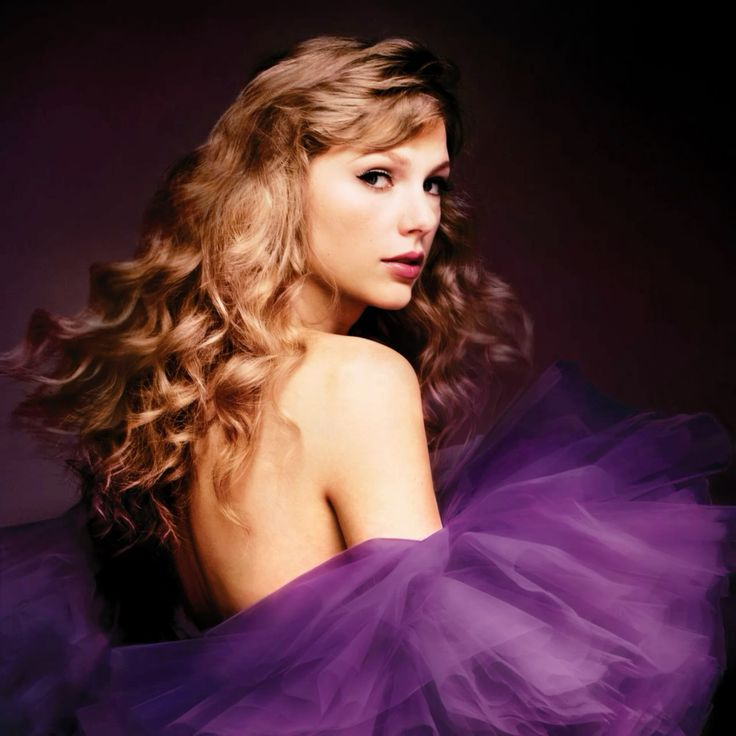

Discografia
Taylor Swift (2006) Su álbum debut homónimo está centrado en el country y el coming-of-age, explorando temas como el amor adolescente y los desafíos del crecimiento. Canciones como "Tim McGraw" y "Teardrops on My Guitar" la posicionaron en la escena musical.

Fearless (2008) Un álbum que mezcla country y pop, donde Taylor se enfoca en las emociones universales de los romances juveniles. Con éxitos como "Love Story" y "You Belong with Me", Fearless consolidó su estatus de estrella. La versión de Taylor's Version se lanzó en 2021.
Speak Now (2010)Taylor escribió este álbum completamente sola, abordando emociones de arrepentimiento y crecimiento personal. Temas como "Back to December" y "Mean" muestran su maduración. La versión de Taylor's Version se lanzó en 2023.

Red (2012) Este álbum muestra una transición del country al pop, explorando desamor, anhelo y nostalgia. "We Are Never Ever Getting Back Together" y "I Knew You Were Trouble" son algunos de sus mayores éxitos. Red (Taylor's Version) fue lanzado en 2021 e incluyó el esperado "All Too Well (10 Minute Version)".

1989 (2014)Totalmente orientado al pop, 1989 marca un cambio drástico en su estilo. Temas como "Shake It Off" y "Blank Space" presentan una imagen renovada y más confiada de Swift, explorando temas como la fama y la libertad personal. La versión de Taylor's Version se lanzó en 2023.
Reputation (2017) Este álbum trata sobre la redención y la reinvención después de una etapa tumultuosa en la vida pública de Taylor. Canciones como "Look What You Made Me Do" y "Delicate" muestran una faceta más oscura y madura de la artista.

Lover (2019) Un álbum colorido y optimista que celebra el amor y la aceptación. Con canciones como "Lover" y "You Need to Calm Down", Swift explora una perspectiva más positiva y abierta, volviendo al pop puro después de Reputation.

Folklore (2020) Un giro inesperado hacia el indie-folk, Folklore fue creado durante la pandemia. Con letras más introspectivas y narrativas, temas como "Cardigan" y "Exile" reflejan emociones complejas y relatos de ficción.

Evermore (2020) Un álbum hermano de Folklore, donde Taylor continúa su exploración en el indie-folk y el storytelling. Canciones como "Willow" y "Champagne Problems" mantienen un tono melancólico pero poético.

Midnights (2022) Este álbum narra historias sobre noches de insomnio, conflictos internos y reflexiones personales. Con temas como "Anti-Hero" y "Bejeweled", Swift vuelve al pop, pero con un enfoque más maduro y narrativo

The Tortured Poets Department (2024) Este álbum refleja una faceta más sombría de Taylor Swift, explorando emociones como el desamor, la vulnerabilidad y el dolor emocional. Con canciones como "Fortnight" y "Florida!!!", Swift se adentra en narrativas más profundas. Colaboraciones con artistas como Post Malone y Florence + The Machine aportan una diversidad de sonidos que complementan el tono introspectivo del disco. Es considerado uno de sus trabajos más personales hasta la fecha.